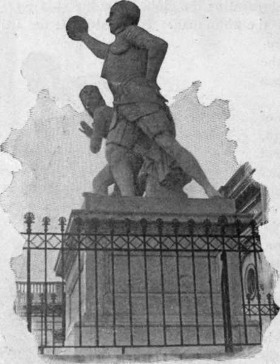
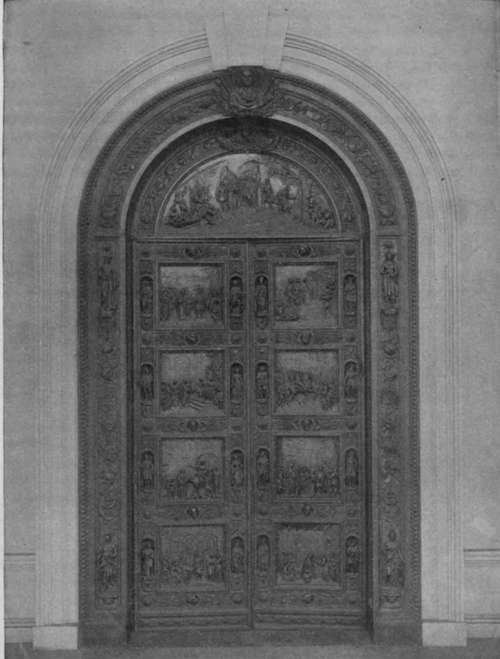

Rogers' Bronze Doors
Description
This section is from the book "The National Capitol. Its Architecture Art And History", by George C. Hazelton, Jr. Also available from Amazon: The National Capitol Its Architecture Art and History.
Rogers' Bronze Doors
The beautiful bronze doors at the eastern entrance to the rotunda are popularly called " The Columbus Doors" because they represent scenes in the life of that great admiral. They were designed and modeled in Rome in 1858 by Randolph Rogers, a young American of whom his countrymen should feel proud, and cast by F. von Miller, a German, in Munich in i860. The two leaves, each composed of four panels—with transom, frame and trimmings also in oronze—were cast in sections. The doors were first placed in the arch leading from Statuary Hall to the south extension, in November, 1863. They were soon removed, however, to their present position.
The lowest panel upon the left represents Columbus before the Council of Salamanca, where he was denied assistance and his theories ridiculed by the wise men of the court. Discouraged, he sought the Convent, of La Rabida, at the hands of whose worthy prior, Juan Perez, he had before found sympathy and aid. The next panel represents the navigator setting forth for the court of Spain, where, finally, through a letter to the queen from Perez, her onetime confessor, the interview with Ferdinand and Isabella set forth in the third panel was secured. The upper panel shows the departure of Columbus from Palos on his first voyage of discovery, Friday, August 3, 1492.
The discovery Persico.
ROGERS' BRONZE DOORS.
The large transom surmounting the doors represents the landing of the Spaniards in the New World, Friday, October 12th, upon the island of Guanahani, of which Columbus took possession in the name of Ferdinand and Isabella, and which he christened San Salvador in honor of the Savior.
The upper panel upon the right portrays the re-embarkation of Columbus for home, taking with him several natives as a proof of his discovery. The one next below shows the triumphal entry of the great navigator, upon his return to Spain, into Barcelona, where the sovereigns and the court were eager to welcome the successful explorer most royally. Then follows the recall and arrest of Columbus, the humiliating termination of his third voyage of discovery, upon groundless charges preferred by Bobadilla, a degradation which was in some part lightened by the fact that the chains were ordered from his wrists through the intercession of his friend, Queen Isabella. The lowest panel to the right tells the sad story of the death of the aged discoverer, then in his seventy-third year, at Valladolid, in 1506.
The sixteen small statuettes in the niches on the right and left of the panels represent friends of Columbus, and explorers, conquerors and sovereigns connected with the discovery and settlement of the New World. They are Alexander VI. of Rome, Ferdinand and Isabella of Spain, Charles VIII. of France, John II. of Portugal, Henry VII. of England, Mendoza, Lady B. d'Bobadilla, Perez, Pinzon, captain of the Pinta, Bartholomew Columbus, Ojeda, Vespucci, Cortez, Balboa and Pizarro. Above and below the panels are the heads of Irving, Prescott and other historians. The four figures at the corners of the frame are emblematic of the four continents—Asia and Europe on the left, Africa and America on the right. The head of Columbus, delicately worked, crowns the arch of the door.
The sculptor evidently drew his inspiration for these doors from the bronze doors of Ghiberti at the gates of the Baptistery in Florence, which they resemble in all but theme ; and though the world-renowned Italian gates are generally conceded to be the best example of their class of art, the Columbus doors compare favorably with them, and command universal admiration, not only for the conception and arrangement of the story told, but for fineness of detail, good modeling and a general effect of strength and beauty combined. The doors are 18 feet in height and 9 feet in width; and weigh 20,000 pounds. They have cost the government $28,500, of which Rogers received $8,000 for the model, and Von Miller $17,000.
Continue to: